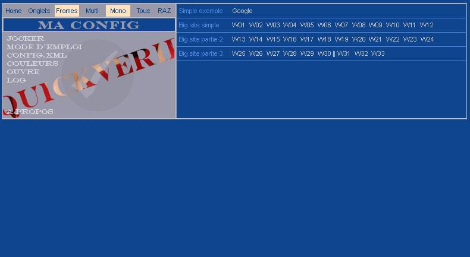

Welcome to Quickverif Pages.
<<<<<<< HEAD  =======Ces pages sont en cours de construction.
 >>>>>>> refs/remotes/origin/master
>>>>>>> refs/remotes/origin/master
Authors and Contributors
@Didier Mermin
You may write him, email in the profile.
Having trouble with Pages? Check out the documentation at http://help.github.com/pages or contact support@github.com and we’ll help you sort it out.
=======Having trouble with Pages? Check out the documentation at http://help.github.com/pages or contact support@github.com and we’ll help you sort it out.
>>>>>>> refs/remotes/origin/master